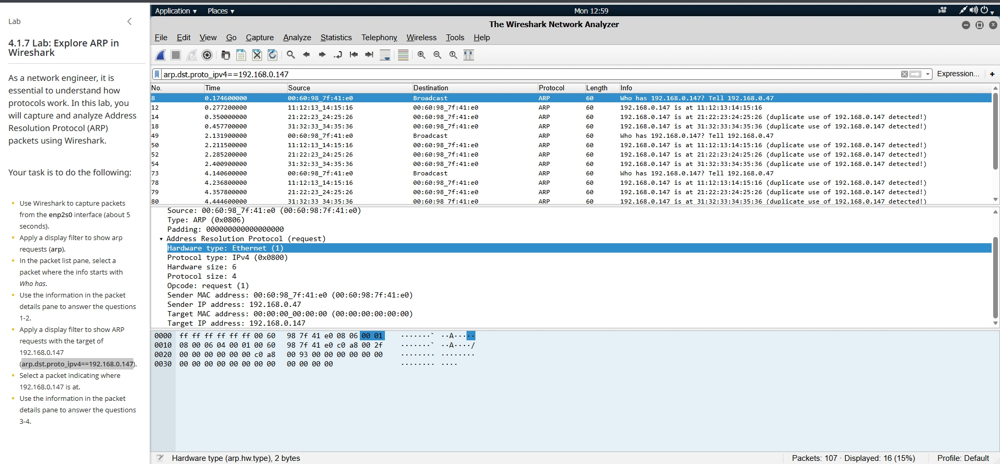

Lab Evidence
Screenshots documenting the work completed during the lab.

Figure 1:

Figure 2:

Figure 3:
NETWORK SECURITY
Network traffic capture and packet analysis using Wireshark.
Screenshots documenting the work completed during the lab.

Figure 1:
Figure 2:
Figure 3:
I learned how to capture, and filter packets with Wireshark. I learned how to look to the Info section and see how many requests and replies were detected.